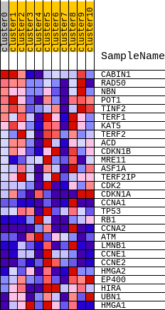
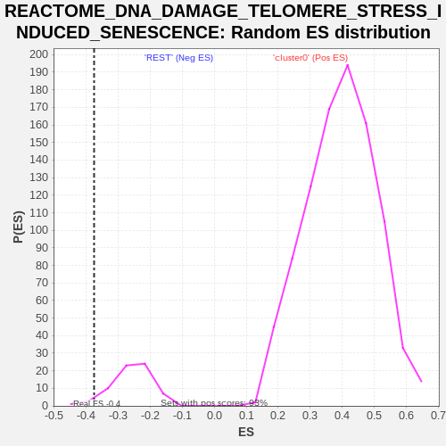

| | | Dataset | GTE_table.phenotypes_gte.cls#cluster0_versus_REST |
| Phenotype | phenotypes_gte.cls#cluster0_versus_REST |
| Upregulated in class | REST |
| GeneSet | REACTOME_DNA_DAMAGE_TELOMERE_STRESS_INDUCED_SENESCENCE |
| Enrichment Score (ES) | -0.37415278 |
| Normalized Enrichment Score (NES) | -1.4463694 |
| Nominal p-value | 0.05882353 |
| FDR q-value | 0.056737587 |
| FWER p-Value | 0.026 |
Table: GSEA Results Summary
 Fig 1: Enrichment plot: REACTOME_DNA_DAMAGE_TELOMERE_STRESS_INDUCED_SENESCENCE
Fig 1: Enrichment plot: REACTOME_DNA_DAMAGE_TELOMERE_STRESS_INDUCED_SENESCENCE
Profile of the Running ES Score & Positions of GeneSet Members on the Rank Ordered List
| SYMBOL | TITLE | RANK IN GENE LIST | RANK METRIC SCORE | RUNNING ES | CORE ENRICHMENT | | 1 | CABIN1 | na | 2188 | 1.438 | 0.0430 | No |
| 2 | RAD50 | na | 4043 | 1.007 | 0.0633 | No |
| 3 | NBN | na | 6647 | 0.704 | 0.0372 | No |
| 4 | POT1 | na | 7340 | 0.630 | 0.0642 | No |
| 5 | TINF2 | na | 9892 | 0.400 | 0.0163 | No |
| 6 | TERF1 | na | 11206 | 0.299 | -0.0012 | No |
| 7 | KAT5 | na | 15398 | 0.023 | -0.1285 | No |
| 8 | TERF2 | na | 16890 | -0.059 | -0.1699 | No |
| 9 | ACD | na | 18109 | -0.084 | -0.2010 | No |
| 10 | CDKN1B | na | 19873 | -0.141 | -0.2444 | No |
| 11 | MRE11 | na | 20471 | -0.164 | -0.2502 | No |
| 12 | ASF1A | na | 20703 | -0.174 | -0.2440 | No |
| 13 | TERF2IP | na | 21074 | -0.189 | -0.2409 | No |
| 14 | CDK2 | na | 21260 | -0.193 | -0.2318 | No |
| 15 | CDKN1A | na | 22511 | -0.236 | -0.2522 | No |
| 16 | CCNA1 | na | 22746 | -0.242 | -0.2408 | No |
| 17 | TP53 | na | 26865 | -0.380 | -0.3385 | No |
| 18 | RB1 | na | 28024 | -0.433 | -0.3409 | Yes |
| 19 | CCNA2 | na | 28030 | -0.433 | -0.3078 | Yes |
| 20 | ATM | na | 28433 | -0.455 | -0.2853 | Yes |
| 21 | LMNB1 | na | 29221 | -0.500 | -0.2711 | Yes |
| 22 | CCNE1 | na | 29342 | -0.509 | -0.2357 | Yes |
| 23 | CCNE2 | na | 29732 | -0.535 | -0.2066 | Yes |
| 24 | HMGA2 | na | 30030 | -0.560 | -0.1728 | Yes |
| 25 | EP400 | na | 30203 | -0.573 | -0.1341 | Yes |
| 26 | HIRA | na | 30857 | -0.632 | -0.1058 | Yes |
| 27 | UBN1 | na | 32328 | -0.992 | -0.0748 | Yes |
| 28 | HMGA1 | na | 32377 | -1.043 | 0.0038 | Yes |
Table: GSEA details [plain text format]

Fig 2: REACTOME_DNA_DAMAGE_TELOMERE_STRESS_INDUCED_SENESCENCE
Blue-Pink O' Gram in the Space of the Analyzed GeneSet

Fig 3: REACTOME_DNA_DAMAGE_TELOMERE_STRESS_INDUCED_SENESCENCE: Random ES distribution
Gene set null distribution of ES for REACTOME_DNA_DAMAGE_TELOMERE_STRESS_INDUCED_SENESCENCE